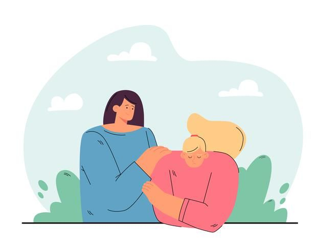
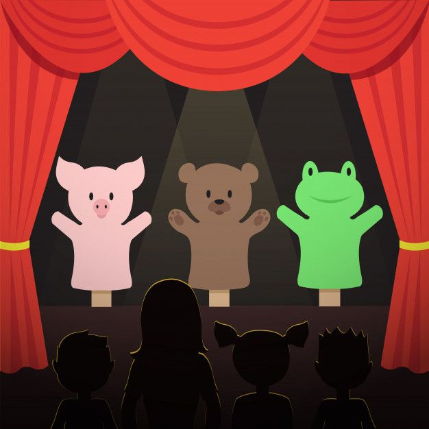
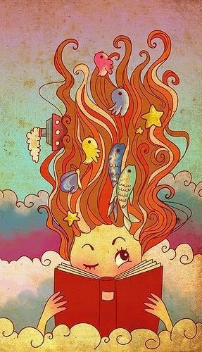

Meus projetos

Cores da Empatia
Projeto artístico-pedagógico que usa cores, formas e sensações para estimular o acolhimento em ambientes hospitalares.

Teatro & Aprendizagem
Peças teatrais curtas encenadas em hospitais com objetivo de ensinar e entreter ao mesmo tempo.

Diário das Emoções
Uma ferramenta criativa que ajuda os alunos a expressarem sentimentos durante o tratamento hospitalar.